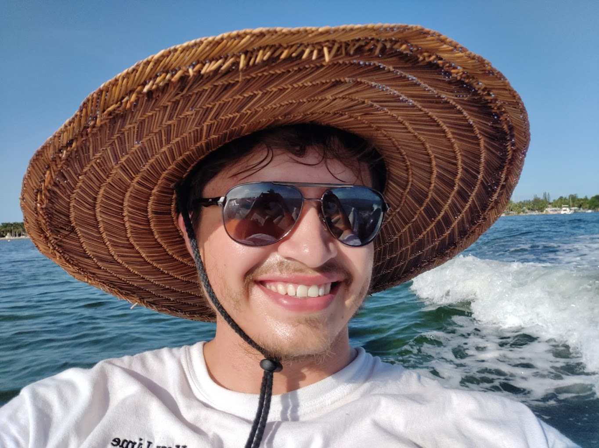

Proverbs 23:7 - "As a man thinks, so does he become."
I am an aspiring software engineer with a passion for people, tech, and learning new things. I enjoy being curious and understanding the way things work, whether from a technical or social perspective. I believe some of our greatest growth as humans comes from doing, learning from our mistakes, and striving to help others in the ways we can. A great teacher once taught me that the Jordan river is teeming with life because the water is always moving; what comes in, is released out into the world. Compare this to the aptly named Dead Sea, where the water going in does not flow, and in its stagnation, very little grows around it. I want to be like a river, learning from and growing those around me.
Here are some projects that I've done: